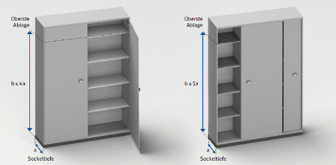

Schränke, Bürocontainer und Raumgliederungselemente müssen so gestaltet sein, dass ein Verletzungsrisiko für Benutzer oder auch für Dritte minimiert ist. Die bestimmungsgemäße und die nach vernünftigem Ermessen vorhersehbare Verwendung sind dabei zu berücksichtigen.
Sie müssen so aufgestellt sein, dass sie bei bestimmungsgemäßer Verwendung die Last der einzulagernden Gegenstände sicher aufnehmen können (Abbildung 38).

Abbildung 38: Verhältnis der Sockeltiefe zur Höhe der obersten Ablage
Als standsicher gelten bei lotrechter Aufstellung im Allgemeinen:
Bei Möbeln mit ausziehbaren Elementen muss die Standsicherheit im ungünstigsten Fall gewährleistet sein, das heißt nur alle gleichzeitig herausziehbaren Elemente sind belastet. Bauelemente – zum Beispiel Fachböden, Auszüge, Schubladen – von Schränken, Bürocontainern und Raumgliederungselementen müssen so ausgeführt oder gesichert sein, dass sie durch unbeabsichtigtes Lösen weder heraus- noch herabfallen können.
Gefahren durch bewegliche Teile werden vermieden, wenn zugängliche Zwischenräume in jeder Position während der Bewegung entweder ≤ 4 mm oder ≥ 25 mm sind. Ausgenommen hiervon sind Türen, Klappen und Ausziehelemente einschließlich ihrer Scharniere und Führungsschienen. Die Sicherheitsabstände gelten auch für die Abstände zwischen Griffen und anderen Teilen.
Senkrecht laufende Rollläden dürfen sich nicht durch ihr Eigengewicht aus einer Position oberhalb 200 mm der Schließposition selbsttätig nach unten bewegen.
Büroschränke auf Rollen, ausgenommen Bürocontainer als Tischunterfahrcontainer, sind – wenn erforderlich – mit Bedienelementen zum Schieben/Ziehen auszurüsten. Die Bedienelemente müssen in einer Höhe von 850 mm bis 1150 mm angebracht sein. Unterkonstruktionen sind flächenbündig mit den Außenkonturen abzuschließen, um Stolpergefahren zu vermeiden.
Bei Büroschränken dürfen die Rollen einschließlich der Unterkonstruktion zur Gewährleistung der Standsicherheit und Verbesserung der Rolleigenschaften sowie zur Verringerung der Handhabungskräfte ausnahmsweise maximal 100 mm, bei Arbeitstischen und deren Unterfahrcontainern maximal 50 mm, über die Außenkonturen ragen.
Die erforderlichen Anfahrkräfte zum Bewegen der Büromöbel dürfen beim Schieben maximal 235 N und beim Ziehen maximal 165 N pro Person betragen.
Wird bei Schränken die Ablagehöhe von 1,80 m überschritten, sind geeignete Aufstiege zur Verfügung zu stellen und zu benutzen.
Weitere Literatur
|